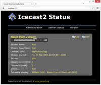

Icecast2
Dieser Artikel wurde für die folgenden Ubuntu-Versionen getestet:
Dieser Artikel ist größtenteils für alle Ubuntu-Versionen gültig.
Zum Verständnis dieses Artikels sind folgende Seiten hilfreich:
Icecast2  ist ein quelloffener Streaming-Server, der derzeit das Ogg Vorbis- und MP3-Format unterstützt. Verschiedene Source-Clients können zum Icecast2 Server senden und fast jeder AudioPlayer kann den Stream empfangen. Icecast2 kann auch als Relay-Server für andere Icecast-, Icecast2- Server verwendet werden.
ist ein quelloffener Streaming-Server, der derzeit das Ogg Vorbis- und MP3-Format unterstützt. Verschiedene Source-Clients können zum Icecast2 Server senden und fast jeder AudioPlayer kann den Stream empfangen. Icecast2 kann auch als Relay-Server für andere Icecast-, Icecast2- Server verwendet werden.
Damit mehrere Radio-Sendungen auf einem Server gesendet werden können, sind die Streams auf einem Icecast-Server in Mountpoints organisiert. Der Moderator/DJ als Source-Client und die Zuhörer verbinden sich auf dem selben Port mit dem Mountpoint.
Installation¶
Folgendes Paket muss installiert [1] werden:
icecast2 (universe)
 mit apturl
mit apturl
Paketliste zum Kopieren:
sudo apt-get install icecast2
sudo aptitude install icecast2
Benutzung¶
In der Datei /etc/icecast2/icecast.xml müssen mindestens die Passwörter und der Hostname angepasst werden [2]. Weitere Einstellungen sind im Folgenden und in der Datei kommentiert.
Abschließend muss der Eintrag ENABLE=false in der Datei /etc/default/icecast2 auf ENABLE=true geändert werden [2].
Nun kann der Server gestartet werden [3]:
sudo /etc/init.d/icecast2 start

Webinterface¶
Das Webinterface ist jetzt ebenso auf dem Port 8000 zu erreichen, wie der voreingestellte Mountpoint /stream. Das Webinterface bietet Statistiken und eine einfache Möglichkeit, die Metadaten zum Stream im Betrieb zu aktuallisieren.
Zur Administration über das Webinterface wird das in der Konfiguration festgelegte Passwort des Benutzers admin benötigt.
Konfiguration¶
Auf Grundlage der Datei /etc/icecast2/icecast.xml kann man in einem Texteditor mit Root-Rechten schnell eine neue Konfiguration des Icecast2-Servers erstellen, natürlich können beliebig viele Konfigurationen erstellt und unter verschiedenen Namen gespeichert werden [4].
Allgemeiner Aufbau¶
Der einfachste Aufbau der Konfigurationsdatei ergibt sich ohne die Angabe eines Mountpoint, da der Standard-Mountpoint /stream vordefiniert ist.
<icecast> # Begrenzungen # Benutzer und Passwörter # Yellow Pages Einstellungen # übrige Server-Einstellungen </icecast>
Begrenzungen¶
Begrenzungen dienen im wesentlichen der Bandbreiten-Beschränkung.
<limits> <clients>4</clients> # Maximale Zuhörerzahl <sources>1</sources> # Maximale Anzahl gleichzeitig verbundener Quellen <threadpool>5</threadpool> # Anforderungen, die der Server gleichzeitig verarbeitet <queue-size>524288</queue-size> # Warteschlangengröße <client-timeout>30</client-timeout> # Verbindungstrennung bei Timeout zum Client in Sekunden <header-timeout>15</header-timeout> # Verbindungstrennung bei Timeout der Metadaten in Sekunden (?) <source-timeout>10</source-timeout> # Verbindungstrennung bei Timeout zum Source-Client in Sekunden <burst-on-connect>1</burst-on-connect> # Buffern bei Verbindung <burst-size>65535</burst-size> # Buffergröße </limits>
Benutzer und Passwörter¶
Damit nur die Moderatoren den Stream zum Server senden können, bedient man sich des Benutzers source, dessen Zugriff ebenso passwortgeschützt ist wie der des Webadministrators.
<authentication> <source-password>hackme</source-password> # Passwort, mit dem sich der Benutzer source verbindet. <relay-password>hackme</relay-password> # Passwort, mit dem sich Relay-Server verbinden. <admin-user>admin</admin-user> # Der Benutzername des Administrators der Weboberfläche. <admin-password>hackme</admin-password> # Das Passwort des Administrators der Weboberfläche. </authentication>
Yellow Pages¶
Mit der Veröffentlichung der Metadaten zum Stream in den Yellow Pages wird die Internet-Station für die Hörer leicht auffindbar.
<directory> <yp-url-timeout>15</yp-url-timeout> <yp-url>http://dir.xiph.org/cgi-bin/yp-cgi</yp-url> # Beispiel Yellow Page Server </directory>
Server-Einstellungen¶
<hostname>http://''deine.domain.de''</hostname> # Der Hostname ist der Computername des Systems oder seine IP-Adresse. <listen-socket> <port>8000</port> # Der Port auf dem Moderator und Zuhörer zum Stream eines Mountpoints verbinden. <bind-address>::</bind-address> # Zugriff auch mit IPv6 ermöglichen. Fehlt dieser Eintrag, ist ein Zugriff nur via IPv4 möglich. </listen-socket>
Webserver¶
Der Webserver sorgt dafür, dass das Webinterface erreichbar ist.
<fileserve>1</fileserve> # Webserver an/aus <paths> <basedir>/usr/share/icecast2</basedir> # Basisverzeichnis für den Webserver <logdir>/var/log/icecast2</logdir> # Protokolldatei des Webservers <webroot>/usr/share/icecast2/web</webroot> # Wurzelverzeichnis des Webservers <adminroot>/usr/share/icecast2/admin</adminroot> # Wurzelverzeichnis des Webserver-Admins <alias source="/" dest="/status.xsl"/> # Alias für den Standard-Mountpoint </paths>
Logging und Sicherheit¶
<logging> <accesslog>access.log</accesslog> # Name der Zugriffsprotokoll-Datei <errorlog>error.log</errorlog> # Name der Fehlerprotokoll-Datei <loglevel>4</loglevel> # 4 Debug, 3 Informationen, 2 Warnungen, 1 Fehler <logsize>10000</logsize> # Maximale Größe einer Protokoll-Datei </logging> <security> <chroot>0</chroot> </security>
Source-Clients¶
Verschiedene Source-Clients stehen dem Moderator oder DJ des Icecast2-Servers zur Verfügung. Aus dem Icecast-Projekt selbst stammt Ices, das ohne grafische Oberfläche auskommt und in zwei verschiedenen Versionen entwickelt wird. Die Software Darkice kann wie Ices über Konfigurationsdateien eingestellt werden oder über die grafische Bedienoberfläche Darksnow. Für gehobene Ansprüche stellt die Internet DJ Console eine komfortable Lösung bereit, die jedoch ein solides System und die in Tonstudio/Konfiguration beschriebenen Einstellungen vorraussetzt.
| Source-Clients im Überblick | |||
| Client | Input | Stream Format | Bedienoberfläche |
| Darkice | ALSA, OSS, Abspielliste, jack | Ogg Vorbis, MP3, aac, MP2 | Darksnow |
| Ices0 | ALSA, OSS, Abspielliste | MP3 | - |
| Ices2 | ALSA, OSS, Abspielliste | Ogg Vorbis | - |
| Internet DJ Console | DJ, Abspiellisten, jack | Ogg Vorbis, MP3 | integriert |
| stream2ip | PulseAudio | Ogg Vorbis | integriert |
| Mixxx - Digital DJ Interface (ab Version 1.9.0) | DJ, Abspiellisten, jack, ALSA | Ogg Vorbis, MP3 | integriert |
| Music Player Daemon | ALSA, OSS, jack, Abspiellisten, DJ | Ogg Vorbis, MP3 | MPD-Clients |
Start und Stopp-Befehle¶
sudo /etc/init.d/icecast2 start # Icecast starten sudo /etc/init.d/icecast2 stop # Icecast anhalten sudo /etc/init.d/icecast2 restart # Icecast neu starten sudo /etc/init.d/icecast2 reload # Icecast - Konfigurationsdateien neu laden
Start-Stopp-Skript in deutscher Sprache¶
Dieses Skript kann in der aktuellen Version von Icecast getauscht werden, danach stehen einige Texte in deutscher Sprache zur Verfügung.
Zuerst muss die Datei /etc/init.d/icecast2 in einem Editor mit Root-Rechten geöffnet werden. Der komplette Inhalt muss mit der unten stehenden ausgetauscht und im Unix-Format abgespeichert werden.
#!/bin/sh ### BEGIN INIT INFO # Provides: icecast2 # Required-Start: $remote_fs $network # Required-Stop: $remote_fs # Default-Start: 2 3 4 5 # Default-Stop: 0 1 6 # Short-Description: Startet den Icecast-Audio-Strom-Server als Dienst. ### END INIT INFO # # icecast2 # # Written by Miquel van Smoorenburg <miquels@cistron.nl>. # Modified for Debian # by Ian Murdock <imurdock@gnu.ai.mit.edu>. # # Further modified by Keegan Quinn <ice@thebasement.org> # for use with Icecast 2 # # Übersetzt von Paderman (https://ubuntuusers.de/user/Paderman/) # für wiki.ubuntuusers.de [2015, 2016] # # Further modifications by / Weitere Änderungen durch Paderman # [2016-03-06] +Status # [2016-03-06] +Verwendung, mit Beschreibungen erweitert # # PATH=/usr/local/sbin:/usr/local/bin:/sbin:/bin:/usr/sbin:/usr/bin DAEMON=/usr/bin/icecast2 NAME=icecast2 DESC=Icecast2 test -x $DAEMON || exit 0 # Standardwerte CONFIGFILE="/etc/icecast2/icecast.xml" CONFIGDEFAULTFILE="/etc/default/icecast2" USERID=icecast2 GROUPID=icecast ENABLE="false" # Liest die Konfigurationsdatei (Überchreibt obigen Standard) [ -r "$CONFIGDEFAULTFILE" ] && . $CONFIGDEFAULTFILE if [ "$ENABLE" != "true" ]; then echo "Der $NAME-Dienst ist deaktiviert! Bitte Lesen Sie die $CONFIGDEFAULTFILE und stellen Sie die richtigen Werte ein." exit 0 fi set -e case "$1" in start) echo -n "Starte $DESC: " start-stop-daemon --start --quiet --chuid $USERID:$GROUPID \ --exec $DAEMON -- -b -c $CONFIGFILE echo "$NAME." ;; stop) echo -n "$DESC anhalten: " start-stop-daemon --stop --oknodo --quiet --exec $DAEMON echo "$NAME." ;; reload|force-reload) echo "$DESC Konfigurationsdateien neu laden." start-stop-daemon --stop --signal 1 --quiet --exec $DAEMON ;; restart) echo -n "Starte $DESC neu: " # Sendet nach 5 Sekunden einen TERM und wartet höchstens 30 Sekunden. start-stop-daemon --stop --oknodo --retry TERM/5/0/30 --quiet --exec $DAEMON start-stop-daemon --start --quiet --chuid $USERID:$GROUPID \ --exec $DAEMON -- -b -c $CONFIGFILE echo "$NAME." ;; status) # Prüft ob Icecast läuft und gibt die PID aus. echo "\033[1;2mStatus von $DESC\033[0m" if pidof $NAME > /dev/null ; then echo "\033[0;1;32m$DESC läuft mit der Prozess-ID $(pidof $DAEMON)\033[0m\n\033[1;2mInfo:\033[0m $DESC kann mit \033[1;2m$0 stop\033[0m angehalten oder mit \033[1;2m$0 restart\033[0m neu gestartet werden." else echo "\033[0;1;31m$DESC läuft nicht\033[0m\n\033[1;2mInfo:\033[0m $DESC kann mit \033[1;2m$0 start\033[0m gestartet werden." fi ;; *) echo "\n\033[1;2mVerwendung:\033[0m\n$0 \033[1;2mstart\033[0m | Startet $DESC\n$0 \033[1;2mstop\033[0m | Beendet $DESC\n$0 \033[1;2mrestart\033[0m | Startet $DESC neu\n$0 \033[1;2mreload\033[0m | Läd die Konfigurationsdatei erneut\n$0 \033[1;2mforce-reload\033[0m | Zwingt ein erneutes laden der Konfigurationsdatei\n$0 \033[1;2mstatus\033[0m | Zeigt den aktuellen Status von $DESC an\n" >&2 exit 1 ;; esac exit 0
Links¶
Icecast2
- Projekt-Seite Internetradio -Übersicht
Internetradio/Funktionsweise - Hintergrundwissen
- Erstellt mit Inyoka
-
 2004 – 2017 ubuntuusers.de • Einige Rechte vorbehalten
2004 – 2017 ubuntuusers.de • Einige Rechte vorbehalten
Lizenz • Kontakt • Datenschutz • Impressum • Serverstatus -
Serverhousing gespendet von